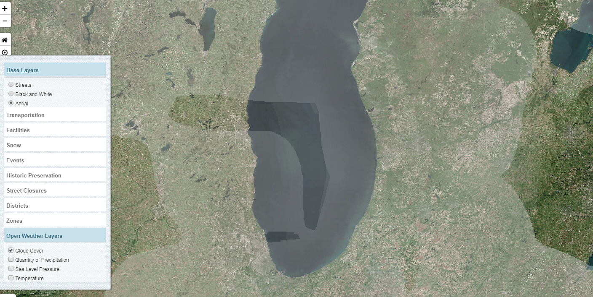
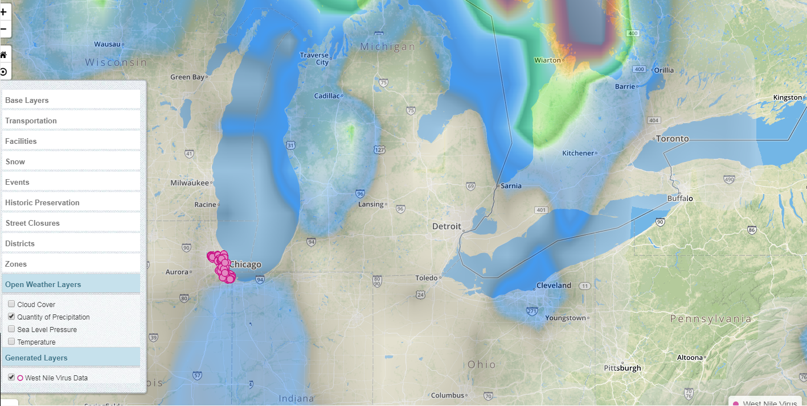
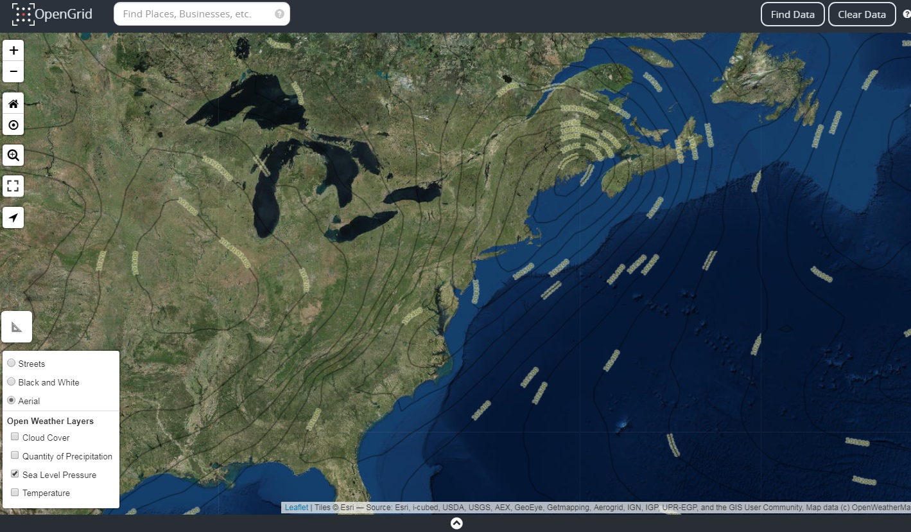

Opening Layers
Layers display geographic information on a map. Layers are displayed in different formats, shapes or icons such as images, tiles, icons, etc. Layers control the way a user sees different classes of information and how to apply a layer on a map. There are multiple layers used to monitor, track or provide visualization on what's happening around the City of Chicago. Layers also provide information about the area of where the layers overlay. To apply a layer on a map, hover over the layer icon and select a layer type.

Available Layers
- Base Layers - Displays different views that can be applied on a map.
- Streets
- Black and White
- Aerial
- Open Weather Layers - Visual representation of weather data layered on a map. Weather layers include current and historical information.
- Cloud Cover
- Quantity of Precipitation
- Sea Level Pressure
- Temperature
- Generated Layers - Are specialized layers derived from an executed quick search or advanced search. The generated layer/s allows the executed data to act as a layer such as being removed from the grid by deselecting the dataset name in the Generated Layers section.
- Data
- Heatmap
- Tilemap
Open Weather Maps
Open weather layers are weather data that includes information about the climate. Weather maps are layered on top of existing base map and available via web apps and mobile devices. Weather layers can be applied to the map without a search. To add a weather layer -> expand the layers icon; click on open weather layers and select a layer type.
- Cloud Cover - Overcast by clouds covering the sky.

- Quantity of Precipitation - Responsible for depositing fresh water on the planet by rain, sleet, snow or any act of liquid forms.

- Sea Level Pressure - The level of the ocean's surface between high and low tides that measures heights and depths. Sea level changes regularly with the tides and irregularity due to wind and currents.

- Temperature - Displayed in heat matrix of degree of hotness and coldness on a map.